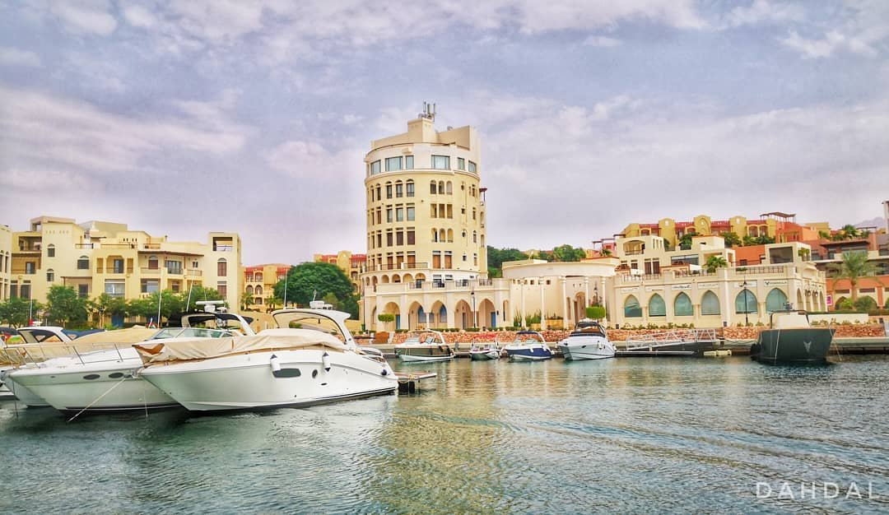

AQABA
Situated on the southern tip of Jordan, approximately 4 hours from the capital of Amman,
Aqaba is a beach town with Jordanian appeal. Equipped with the local watering holes, to water sports,
and a historical flair for those looking to revisit the past Aqaba
is a delightful complement to the metropolitan appeal of Amman. .
There is a lot of thing to discover and visit in Aqaba such as:
- 4TH CENTURY ROMAN CHURCH
- SOUQ BY THE SEA
- AQABA AQUARIUM
- JAPANESE GARDEN DIVE SITE
- AYLA WAKE PARK
Best Hotels in Aqaba:
- Resort Hyatt Regency Aqaba Ayla Resort
-Located in Marina Village, Ayla, 77110 Aqaba, Jordan
-Pool with a view/ Terrace
- Mövenpick Resort & Spa Tala Bay Aqaba
-Tala Bay, South Beach Road, 77110 Aqaba, Jordan
-Pool with a view
- InterContinental Aqaba, an IHG Hotel
-Beach Front, Hotel’s street, 77110 Aqaba, Jordan, 10 minutes’ walk to Aqaba city Centre.
-Sea view
- DoubleTree by Hilton Hotel Aqaba
-Al-Hammamat Al-Tunisyya Street, 77110 Aqaba, Jordan, King Hussein International Airport is 10.6 km
away.
-Sea view/ Pool with a view

